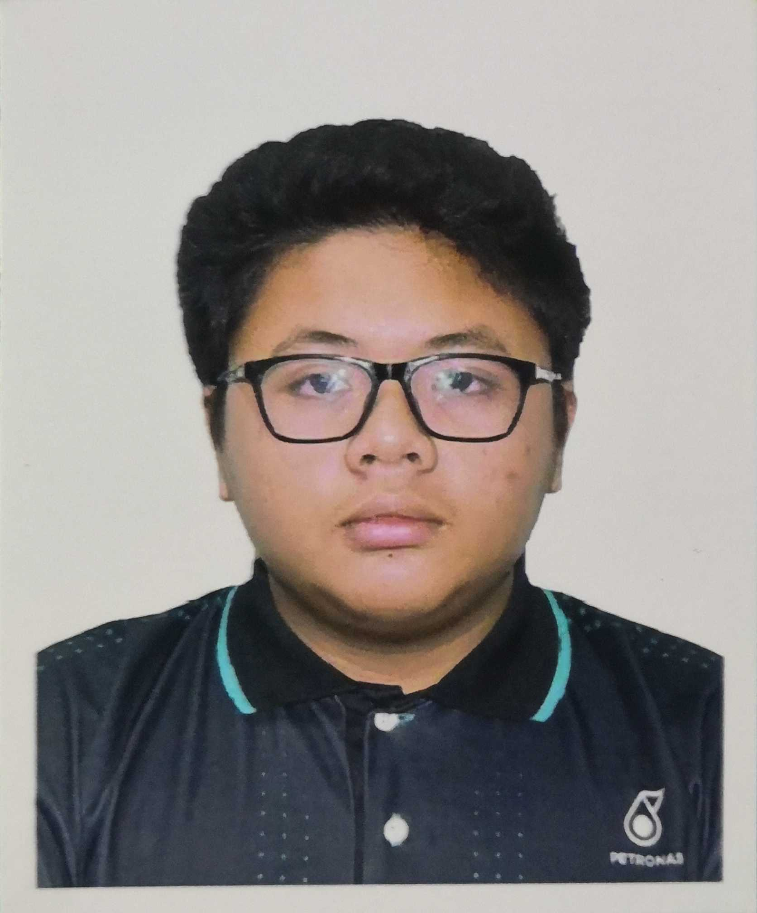

|  | Nuris FaizulInformation Technology Graduates from Universiti Teknologi PETRONAS (UTP)Data Analytics | Programming | Software Development | Leadership | Project Managementnuris.iqmal@gmail.com | 011-5659-2447 | LinkedIn: Nuris.F |
|---|
A recent graduate with a Bachelor of Information Technology, specializing in Data Analytics, with practical experience in data visualization, process automation, and dashboard development. During an internship at PETRONAS Chemicals MTBE, I created interactive dashboards and automated HR processes, enhancing operational efficiency. I led innovative projects, including an Augmented Reality platform for education and a Smart Rainwater Irrigation System, demonstrating both leadership and technical expertise. My ambition is to excel in IT, Data Analytics, and Software Development within a forward-thinking organization. Recently, I completed the PETRONAS BeDigital Bootcamp (Cohort 10, Northern Region), where I further developed my digital literacy and applied the PETRONAS Working Backwards (PWB) methodology. Available to start as soon as possible.
| Core Technical Skills | Functional Skills | General Industrial Skills |
|---|---|---|
|
|
|
© Nuris Faizul. All rights reserved.